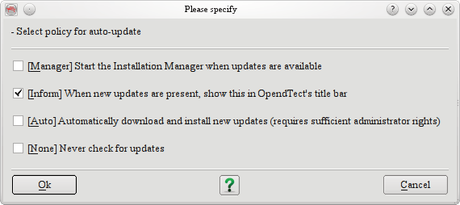

The
installation manager is a wizard to install/upgrade existing the
OpendTect (Stable / Development) releases. The release type field is
used to select the release that is needed to be installed/upgraded.
The installation base directory refers to the installation
path.
There
is a warning messages that will pop-up if there is an existing
installation or the selected directory contains files other than
OpendTect's files. If you are sure that the path is right, and the
intention is to install in the selected directory, the first option
is selected, "Yes, I know what I am doing." In other case,
if you want to install into a sub-directory of the selected path, the
second option must be selected. It will create a sub-directory
"OpendTect" at where the installation will be done.
The
figure above suggests to select the package type of OpendTect. To
read more about OpendTect packages type, please refer to our web-page
of licensing types
(http://www.opendtect.org/index.php/download.html).
Classic
View
HTML
View
The last window of the wizard is the OpendTect
Package Manager (see above figure). Multiple items can be selected
from the list by checking-in or -out. Optionally, the relevant
package could also be selected from the top list box.
The
installation manager must automatically recognize the previously
installed version at the selected path and will prompt it in the
Installed version field.
To read more about a
particular item in the list, select the item by clicking on it and
read the description on to the right panel.
The auto-update policy can be defined and changed by a user. By
default the option is set to Inform when the updates are
available. To change the update policy, to auto update, the third
option must be selected in the Auto-update policy dialog.

To enter the proxy information, the right proxy server information
must be added in the Connection Setting before running the
installation. This is done in the following dialog.
On the top left corner of the package selection window there is a
"Utilities" menu, which offers some useful functionalities
for the installation manager.
The
utilities menu has the following options.
1) Export download
list
2) Offline installation
3) Rollback
4) Show log
file.
Each of these options are explained below in details.
This option allows the user to download the list of URLs of the individual packages from the download site. This list is stored in a text file which can be used later to download these files directly without the help of the installer program. After downloading, user can run his/her own unzipping scripts to install the packages manually. This facility was only developed for the Linux users. Windows users can use this feature, provided they can prepare their own installation scripts for the installation,.
The offline installation tool allows you to download selected
packages to any of your local folders along with necessary
installation scripts/programs. Once all the packages and
scripts/programs are downloaded to this folder, this folder can be
copied to any other work stations to install OpendTect by running the
scripts/program from this folder.
Windows:
On Windows you
have to run the od_setup.exe from the folder to install
OpendTect.
Linux
On Linus you have to run unix_install.csh
script to install OpendTect.
Rollback tool allows you to restore your previous version of the installation. If after updating the software you feel uncomfortable with some of the new features and want to go back to your previous installation, you have to use this tool. As this tool will change your entire installation so you have to use it cautiously.
The installation manager keeps track of all the action it is executing in a log file. This log file can be viewed from this tool. This is useful for debugging purposes. If you face any trouble during the installation process you can send this file to OpendTect support if needed.